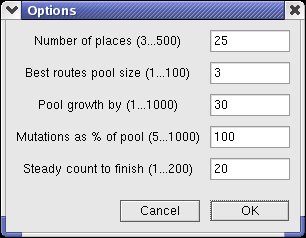

What is gpeddler?
A tale of two solvers
The evolutionary solver
Types of mutations
The Options dialog
Multitasking note
What is gpeddler?
A shady robotic peddler is traveling from town to town, selling its
almost-legal genetic marchandise to almost-respectable bioengineering
companies. To reduce traveling expenses, it has to find the shortest
path to visit a number of places and then return home.
This problem is historically known as the "traveling salesman problem" (TSP)
and, apart from not being Politically Correct (today it is taken to
mean "Traveling salesperson problem") is NP-complete, i.e.it
cannot be solved in polynomial time [if I understand this correctly]. Of
course, it can be almost-solved by heuristic methods: one can find a
'reasonably good' solution in a decent amount of time.
gpeddler uses a simple evolutionary algorithm (which could be
made genetic), as described below; I wrote version 1 in 1998 to evaluate
an implementation of the Dylan language, and I re-wrote it for wxLua for
the same reason.
The name used to mean "genetic peddler", but this is somewhat
misleading (at least with the current implementation); it should be
"evolutionary" instead of "genetic", as there is no exchange of
genetic material among possible solutions. In other words, this is a
boring program featuring no sex whatsoever.
Important note:
I did this just for fun and tool evaluation: I just read a bit about
evolutionary and genetic algorithms, I know very little of 'standard'
TSP solving techniques, and I didn't look it up on purpose when I first
wrote this program: knowing the results beforehand would have spoiled
the fun. So it may be that gpeddler uses well-known techniques, or
horribly inefficient ones, or it just uses the wrong approach: blame
only me for that, not Lua or wxLua, and please do not draw any type of
'scientific' inference from the behaviour of gpeddler.
A tale of two solvers
gpeddler runs two solvers in parallel [*]: the exhaustive solver
just tries out all the (n-1)! possible routes for n places, and sooner
or later finds a perfect solution; for small values of n, it could even
find it before the end of Time, Universe and Everything.
The evolutionary solver operates by natural selection, applying
mutations to a collection of traveling routes, then keeping only the
best ones for the next generation. A route is a list to places to
be visited, in a given order. If there are 10 places, then here is a
possible route:
1, 2, 3, 4, 5, 6, 7, 8, 9, 10 (and then return to place 1)
which, in the rest of this page, will be indicated with a capital
letter:
route A
[*] Due to the coroutine approach used by Lua, the two solvers do not
share time exactly, see Code notes.
The evolutionary solver
Each generation (corresponding to a loop iteration) starts with a
collection of routes, called a pool; if the chosen pool size is
5, then the pool will contain 5 routes:
ABCDE
First, the route population is grown by making the appropriate
number of copies of the pool's contents, and keeping the original apart.
If the growth factor is 4, the situation after pool growing will be:
ABCDEABCDEABCDEABCDE
Then, a number of mutations are applied to the grown pool,
resulting in mutated routes (shown here as lowercase red letters):
AefDghijklmBCnoApqDr
Note than some of the routes can be unaffected, while others could be
mutated twice (or more); the original non-mutated routes are then added
back to the pool:
ABCDEAefDghijklmBCnoApqDr
At this point, the pool is sorted by ascending route length, so
that the best (shortest) routes occupy the first places:
gpCCfABDoAenDrjqEiBlhAkDm
Lastly, only the best (first) routes are kept, the rest is
discarded; in this case, since pool size is 5:
gpCCf
This new pool of routes becomes the new generation; all of the above is repeated
until there are no changes to the best (first) route for the chosen
number of generations.
Note that this approach is not guaranteed to find the best
solution, only a 'reasonable' one; furthermore, there is not even any
certainty that the evolutionary approach will converge towards a
reasonable solution, even if it empirically seems to do so.
Types of mutations
This version of gpeddler uses only a single type of route
mutation, the "reverse subroute":
before:
1, 2, 3, 4, 5, 6, 7, 8, 9, 10
after:
1, 2, 3, 4, 8, 7, 6, 5, 9, 10 (5, 6, 7, 8 reversed)
This type of mutation seems to be quite effective in converging rapidly
towards a 'decent' solution, by 'untwisting' sections of the
route. The program could be easily modified to experiment
with different mutation types, by changing the
EvolutionarySolver:Mutate() function in solver.lua.
What is obviously missing here are 'sexy' mutations, to combine
different parts of two routes, so that the program could be really
called genetic (this could probably work better with a different
data representation).
Lots of other improvements could be introduced but, as I said,
this program has been written to evaluate a software tool; the TSP
problem was just an excuse.
The Options dialog
The dialog window that is called by the "Options" button offers the
opportunity to experiment by changing a number of parameters:

Number of places defines how many places a route contains; it is
the only setting that affects both the exhaustive and the evolutionary
solver. For very small values (usually less than 7-8) the exhaustive
solver is faster, while the evolutionary solver wins hands down when
more places are added. Besides, it can actually find a decent solution
even for a large number of places, whose possible routes simply cannot
be enumerated in realistic time.
Best routes pool size is the number of routes that are kept at
every generation. The rationale behind this is that keeping many
'winning' routes (not only the best one) can be an insurance against
evolutionary dead ends. In practice, with the mutation type used in
gpeddler 2 there are no dead ends, so the evolutionary solver runs
faster with a pool size of 1 (i.e. keeping only the best solution).
However, I left this in place for experiments with different mutation
types (or for genetic algorithms).
Pool growth by is the growth factor: how many copies are made of
the existing pool of routes, before mutations are applied (see description above).
Mutations as % of pool is the number of mutations given as
percentage of pool size (after growing); for example, if the grown pool
contains 30 routes, 100% means that 30 mutations are applied. That does
not mean that 1 mutation is applied to each route: the route to be
mutate is selected at random, so some routes could be left untouched
while others could be mutated more than once.
Steady count to finish is the termination condition for the
evolutionary solver: it quits trying when it cannot found a better
(shorter) route for the given number of generations. The best setting
depends on the other settings; a value too low means that the solver
will terminate prematurely, possibly with a far-from-optimal solution,
while a value too high will make it going on and on even after finding a
decent solution.
Multitasking note
Due to the way multitasking is implemented in Lua, in gpeddler 2 there
is no equal time sharing between solvers. I tried to roughly
balance processing time between the exhaustive and the evolutionary
solver, but please do not rely on this to draw any sort of conclusion.
On the other hand, the two algorithms have different O() complexity,
therefore such a linear execution time difference between them does not
significantly alter a qualitative comparison.
Back to start of page